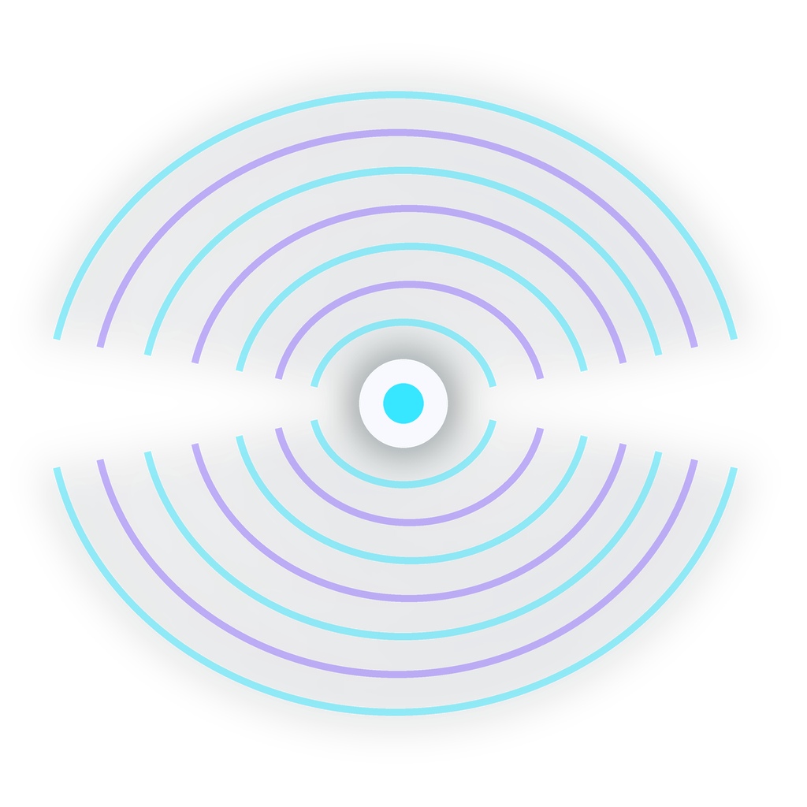

01
License map
Exact model terms, allowed places, business-use limits, and the official source checked that day.
BosonField helps a first-time creator install the right tool, make one real video, fix common errors, and share what worked.

Every release must remove one real beginner problem. The first set will cover choosing a model, checking hardware, installing a workflow, and proving the result.
Exact model terms, allowed places, business-use limits, and the official source checked that day.
A local check that names the GPU, video memory, system memory, disk space, and workflows that fit.
Versioned files, sample inputs, settings, expected run time, output size, and a repair path for each known error.
A tutorial is not complete until another beginner can follow it and get the stated result.
The first community jobs are hardware reports, license checks, translated captions, and repairs to confusing steps.
Open the GitHub project